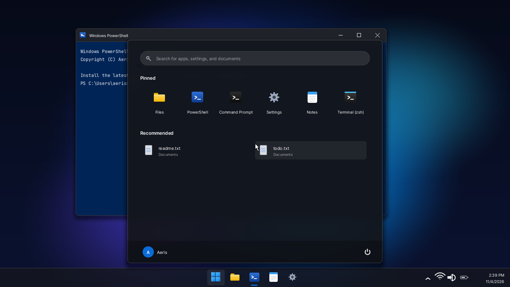
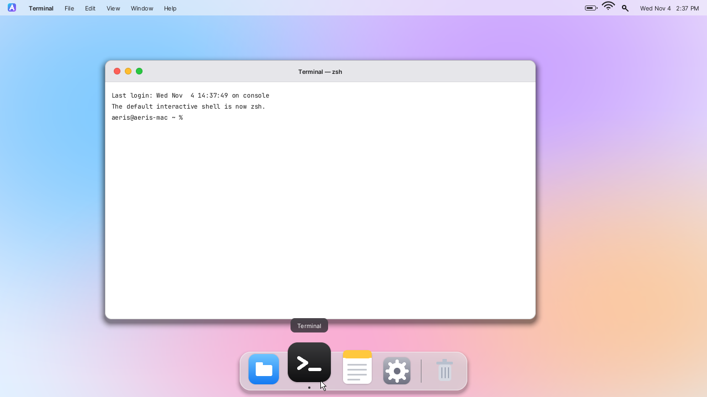
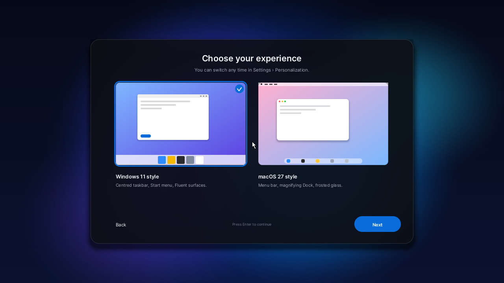
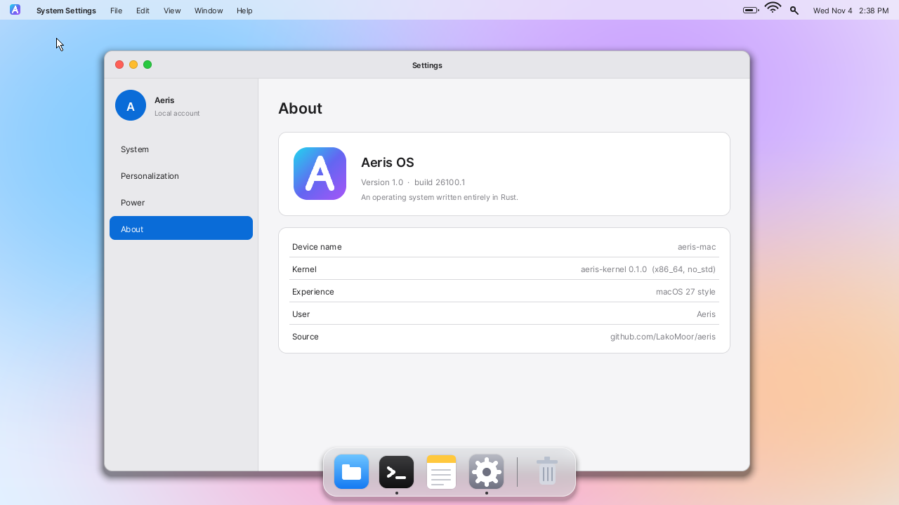
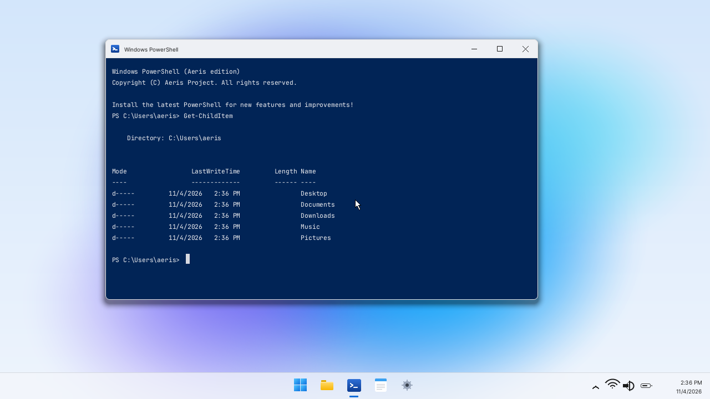
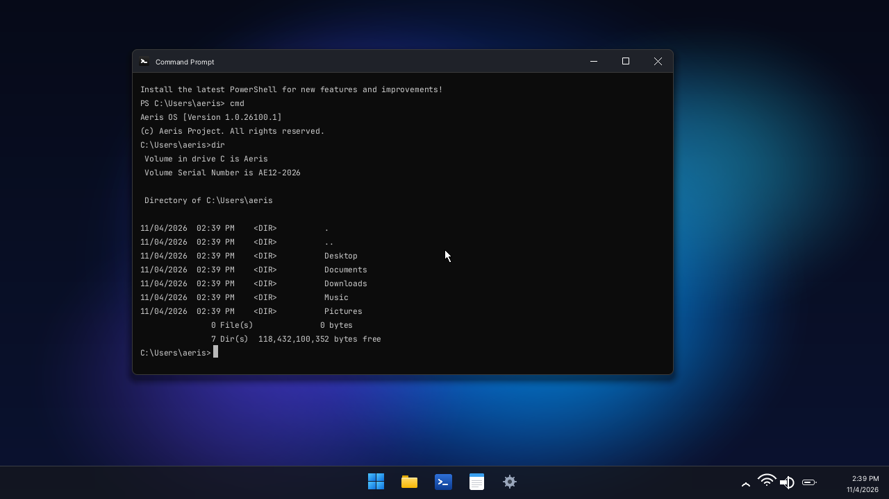

Aeris boots on x86_64, draws its own desktop and ships its own shells. At setup you choose how it looks: Windows 11 or macOS 27.


Setup shows both desktops side by side. Settings › Personalization switches between them instantly, along with light/dark and six accent colours.




One in-memory file system, three dialects: prompts, error messages, dir vs Get-ChildItem vs ls, pipes, redirects, variables and tab completion. Type cmd or pwsh to switch; exit returns.
The shell engine is a no_std crate with unit tests that run on your PC.
Everything you see is drawn by the kernel: no browser, no toolkit, no images baked in.
Anti-aliased rounded shapes, soft shadows, real blur for glass panels, Inter and JetBrains Mono rasterised with ab_glyph.
Drag, resize, minimise, maximise, focus, Alt+Tab. Taskbar and magnifying Dock are driven by the same app model.
Terminal, Files, Settings and Notes. Double-click a file in Files and edit it in Notes; save with Ctrl+S.
Keyboard, mouse and scroll wheel, polled, with a software cursor drawn straight to the framebuffer.
Boots through the bootloader crate from either firmware. Power off and restart work in QEMU.
File system and shell logic live in aeris-core, covered by cargo test.
You need Rust nightly and QEMU. The builder compiles the kernel, produces BIOS and UEFI disk images and starts QEMU.
# windows / linux / macOS git clone https://github.com/LakoMoor/aeris && cd aeris cargo run -p builder -- run # BIOS image in QEMU cargo run -p builder -- uefi # UEFI image (needs OVMF) cargo test -p aeris-core # shell + file system tests
In QEMU click the window to capture the mouse; Ctrl+Alt+G releases it. Your data lives in target/images/aeris-data.img.
aeris-data.img to start over. Without a data disk everything stays in RAM.